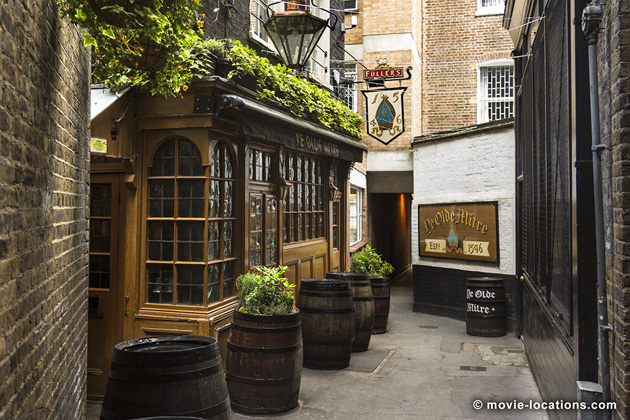
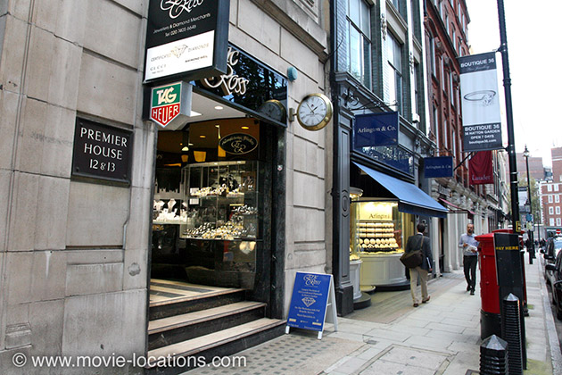
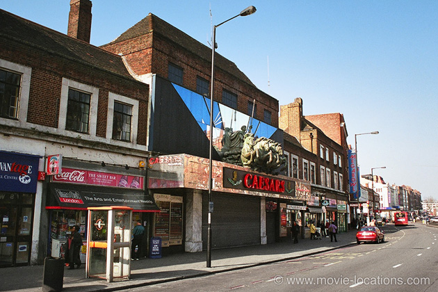

Snatch
Main Content

Where else would you expect to find the locations for a Guy Ritchie gangster movie but in London? It’s snappy and inventive, to be sure, but the director’s compulsive laddishness was starting to outstay its welcome.
The diamond store of Doug the Head (Mike Reid) is Premier House, 12-13 Hatton Garden, EC1, near Holborn. His nearby local (where director Ritchie puts in a microcameo as Man Reading Newspaper) is Ye Olde Mitre Tavern, between 8 & 9 Hatton Gardens.

For once the ‘Ye Olde’ isn’t a faux addition from the 70s, but the real deal. Tucked away in the narrow alley between 8 and 9 Hatton Garden, marked by an old crooked street lamp and a small sign in the shape of a bishop’s mitre, is this this tiny pub, with wood-panelled bars. Local workers ensure that it can get pretty busy at lunchtimes.
The pub was built in 1547 for servants of the palace of the Bishops of Ely, Cambridgeshire (and is technically still part of that county), but after the reformation, Queen Elizabeth I obliged the bishops to rent land to one of her courtiers, Sir Christopher Hatton, hence the name of the area. Shades of Passport to Pimlico – since the bar is technically not part of London, legend has it that police must ask permission to enter – which is quite possibly why it’s Doug’s local.
Naturally, it’s off to London’s East End, specifically Bethnal Green, the old stamping ground of the Kray twins in the 60s – see Peter Medak’s The Krays or Brian Helgeland's Legend for two contrasting takes on their career.
88 Teesdale Street, E2, became Sol’s (Lennie James) pawn shop. Just along the street, by the way, 112a Teesdale Street was the ‘Albion Rooms’, the flat shared, in matier times, by Pete Docherty and Carl Barat of The Libertines.
Bethnal Green Town Hall, Cambridge Heath Road at Patriot Square (also used in Lock, Stock and Two Smoking Barrels), became the tailor of Franky Four Fingers (Benicio Del Toro).
On the Park Royal Industrial Estate just behind Central Middlesex Hospital, west London, a casually tossed carton of milk precipitates the motor smash.
Even further west, in West Ealing, Reels Amusements (which was Jesters at the time of filming), 127 Broadway at Coldershaw Road, is the games arcade and the office of wide-boy Turkish (Jason Statham) that gets smashed up.
Near the next tube stop north (South Greenford) is 14 Tees Avenue, Perivale, across the A40, which was home to Boris the Blade (Rade Serbedzija).

Way south of the river, Caesars Nightclub, which stood at 156-160 Streatham Hill, was the venue where Mickey O'Neil (Brad Pitt) slugged it out in the unlicensed boxing match. The venue, which brought a touch of Las Vegas to South London with its horse-drawn chariot frontage, was the first purpose built ballroom in England, opening in 1928 as The Locarno Ballroom. It's claimed that stars such as Glenn Miller, Laurel & Hardy, and Charlie Chaplin once appeared here. It was a music venue in the 60s and latterly hosted boxing, lap-dancing and all sorts. It closed in 2010 and has been demolished to make way for, yes, more bloody 'luxury' apartments – but Caesar's website lives on for now.
‘The Drowning Trout’, the big old pub where Bullet-Tooth Tony (Vinnie Jones) is confronted by Sol and co before the bloody shoot up, was The Jolly Gardeners, in Lambeth, across the river from Westminster. It seems the trout has now well and truly drowned and the pub has been revamped, becoming (and I'm not kidding) a German gastropub, Zeitgeist, 49 Black Prince Road, at Tyers Street, SE11.
Nearby, Salamanca Place is where Brick-Top’s heavies catch up with Tyrone (Ade) but it too has since been completely redeveloped.
Visit Info
Visit The Film Locations
UK | London
Flights: Heathrow Airport; Gatwick Airport
Visit: London
Travelling: Transport For London
Visit: Ye Olde Mitre Tavern, 1 Ely Place, London EC1N 6SJ (tel: 020.7405.4751)
Visit: Zeitgeist, 49-51 Black Prince Road, Lambeth, London SE11 6AB (tel: 020.7840.0426)